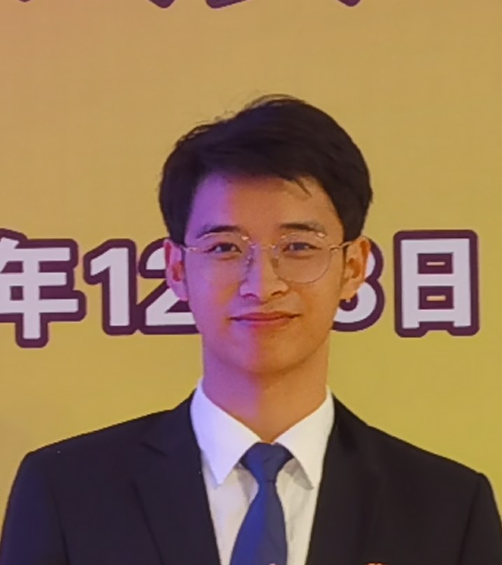

|  | Shixin CHENPh.D. Student
Department of Computer Science and Engineering |
Biography
I am currently an undergraduate (senior) at the School of Electronic Science and Engineering, Nanjing University.
Next year, I will pursue my Ph.D. at the Department of Computer Science and Engineering, the Chinese University of Hong Kong (CUHK),
under the supervision of Prof. Bei Yu since Fall 2022.
Recent News
Dec/2021: I am awarded the honor of Person of the Year (2021), only 10 awardees from all graduates and postgraduates at NJU. (Awardee-List) (photo)
Nov/2021: I am awarded the honor of the Special Top-Grade Scholarship (栋梁特等奖学金), only 10 awardees from all graduates at NJU. (Awardee-List) (photo)
{kind=link}
{kind=link}
{kind=link}
Research Interest
Artificial Intelligence
Harware&Software Co-design
Machine Learning in EDA
Publication
Looking forward to some good news.
Education
Ph.D. Computer Science and Engineering, The Chinese University of Hong Kong (CUHK), since Aug 2022 (expected)
B.S. (Elite class), VLSI Design and System Integration, Nanjing University (NJU), Sept 2018 - June 2022
Selected Awards
| The Person of the Year | NJU | 2021 |
| The Special Top-Grade Scholarship (栋梁特等奖学金) | NJU | 2021 |
| National Encouragement Scholarship | Education Ministry, PRC | 2021 |
| The Yang Lanyun Leadership Scholarship | NJU | 2020 |
| National Encouragement Scholarship | Education Ministry, PRC | 2020 |
| National Scholarship | Education Ministry, PRC | 2019 |
Experiences
SmartMore Co.Ltd
Research Intern, Heterogeneous Computing Group
Jul. 2021 – Now, Shen Zhen site
Topic: Hardware Generator for Super-Resolution Neural Network
Skills
Languages: C, SystemVerilog, Chisel, Python
Tools : Xilinx Vivado, PyTorch, LaTeX
Resources
A Brief Introduction to Chisel (sildes)